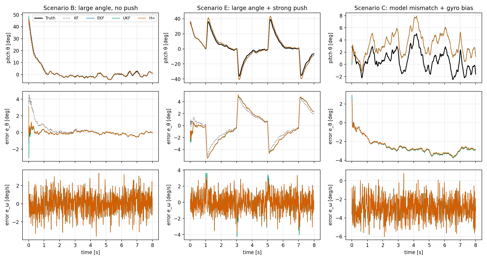
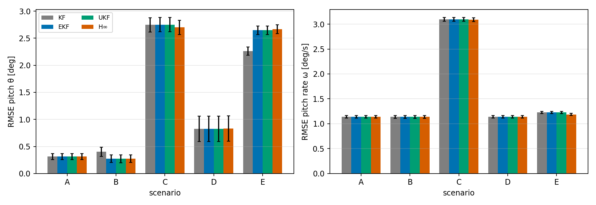
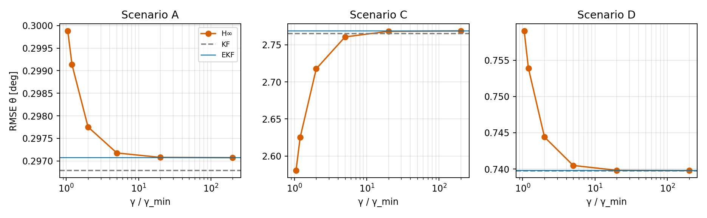

PART 1 Why a Balancing Robot Needs a State Estimator
The balance controller of a wheeled-bipedal robot (LQR on the body, VMC on the legs) needs the full state: the pitch angle $\theta$ and the pitch rate $\dot\theta$ above all. Neither is measured cleanly:
- Accelerometer gives the tilt through the gravity direction, but it is noisy and is corrupted by every linear acceleration (wheel torque steps, landing impacts).
- Gyroscope gives a smooth angular rate, but it has a bias, and integrating it drifts.
A state estimator fuses both with the dynamics model. This article compares the four filters you will meet most often — KF, EKF, UKF and H∞ — and, more importantly, measures them on one shared benchmark so you can see when each one matters. Everything is reproducible: one Python file, a fixed seed, about four minutes of run time.
PART 2 The Benchmark Model
State $x = [\theta,\ \omega]^\top$ with $\omega=\dot\theta$. Continuous dynamics and measurements:
$$\ddot\theta = a\sin\theta - c\,\dot\theta + b\,u + d(t) + w,\qquad y=\begin{bmatrix}\sin\theta + v_1\\ \omega + \beta + v_2\end{bmatrix}$$
Here $u$ is the known control input, $d(t)$ is an external push the filter does not know about, $w$ and $v$ are process and measurement noise, and $\beta$ is an optional unknown gyro bias. The body is stabilised by state feedback $u=-[4,\,1]\,x$ computed from the true state, so all four filters see exactly the same data. Parameters: $a=30$, $b=20$, $c=0.5$, sample time $10\,\text{ms}$, $\sigma_{acc}=0.05$, $\sigma_{gyro}=0.02\,\text{rad/s}$.
The nonlinearity enters twice: $a\sin\theta$ in the dynamics and $\sin\theta$ in the accelerometer channel. The Jacobians used by EKF and H∞ are
$$F_k = I + T_sA_k + \tfrac12T_s^2A_k^2,\quad A_k=\begin{bmatrix}0&1\\ a\cos\hat\theta&-c\end{bmatrix},\qquad H_k=\begin{bmatrix}\cos\hat\theta&0\\0&1\end{bmatrix}$$
PART 3 Kalman Filter (KF)
For a linear system with Gaussian white noise, the KF is the minimum-variance estimator. Predict, then correct with the innovation:
$$\hat x_k^-=F\hat x_{k-1}+Bu_{k-1},\quad P_k^-=FP_{k-1}F^\top+Q$$
$$K_k=P_k^-H^\top(HP_k^-H^\top+R)^{-1},\quad \hat x_k=\hat x_k^-+K_k(y_k-H\hat x_k^-)$$
On a nonlinear plant the "KF" in this article means: use the model linearised once, at $\theta=0$. That isolates what linearising continuously (EKF) buys you.
class KF:
"""Linear Kalman filter, Joseph form. Use with LinearModel."""
name = "KF"
def __init__(self, m, Q, R, x0, P0):
self.m, self.Q, self.R, self.x, self.P = m, Q, R, x0.copy(), P0.copy()
def step(self, u, y):
m = self.m
x = m.F @ self.x + m.B * u
P = m.F @ self.P @ m.F.T + self.Q
H = m.H
S = H @ P @ H.T + self.R
K = P @ H.T @ np.linalg.inv(S)
J = I2 - K @ H
self.x = x + K @ (y - H @ x)
self.P = J @ P @ J.T + K @ self.R @ K.T
return self.xPART 4 Extended Kalman Filter (EKF)
The EKF keeps the KF structure, propagates the state through the true nonlinear function, and re-linearises at the current estimate:
$$\hat x_k^-=f(\hat x_{k-1},u_{k-1}),\quad P_k^-=F_kP_{k-1}F_k^\top+Q,\quad \hat x_k=\hat x_k^-+K_k\big(y_k-h(\hat x_k^-)\big)$$
class EKF:
"""Extended Kalman filter: Jacobians at the current estimate."""
name = "EKF"
def __init__(self, m, Q, R, x0, P0):
self.m, self.Q, self.R, self.x, self.P = m, Q, R, x0.copy(), P0.copy()
def step(self, u, y):
m = self.m
F = m.Fjac(self.x, u)
x = m.f(self.x, u)
P = F @ self.P @ F.T + self.Q
H = m.Hjac(x)
S = H @ P @ H.T + self.R
K = P @ H.T @ np.linalg.inv(S)
J = I2 - K @ H
self.x = x + K @ (y - m.h(x))
self.P = J @ P @ J.T + K @ self.R @ K.T
return self.xCost: one Jacobian evaluation per step on top of the KF. Risk: first-order approximation error, and divergence when the filter is initialised far from the truth or the function is strongly curved.
PART 5 Unscented Kalman Filter (UKF)
The UKF avoids Jacobians. It pushes $2n+1$ deterministically chosen sigma points through $f$ and $h$ and recovers the mean and covariance from them (Merwe scaled points):
$$\lambda=\alpha^2(n+\kappa)-n,\quad \chi_0=\hat x,\quad \chi_i=\hat x\pm\big(\sqrt{(n+\lambda)P}\big)_i$$
$$W_0^{(m)}=\tfrac{\lambda}{n+\lambda},\quad W_0^{(c)}=W_0^{(m)}+1-\alpha^2+\beta,\quad W_i^{(m)}=W_i^{(c)}=\tfrac{1}{2(n+\lambda)}$$
With $n=2$, $\alpha=1$, $\beta=2$, $\kappa=3-n=1$ we get $\lambda=1$.
class UKF:
"""Unscented Kalman filter (Merwe scaled sigma points), additive noise."""
name = "UKF"
def __init__(self, m, Q, R, x0, P0, alpha=1.0, beta=2.0, kappa=None):
n = 2
kappa = 3 - n if kappa is None else kappa
self.n, self.lam = n, alpha ** 2 * (n + kappa) - n
self.Wm = np.full(2 * n + 1, 0.5 / (n + self.lam))
self.Wc = self.Wm.copy()
self.Wm[0] = self.lam / (n + self.lam)
self.Wc[0] = self.Wm[0] + 1 - alpha ** 2 + beta
self.m, self.Q, self.R, self.x, self.P = m, Q, R, x0.copy(), P0.copy()
def _sigma(self, x, P):
S = np.linalg.cholesky((self.n + self.lam) * P)
return np.vstack([x, x + S.T, x - S.T]) # (2n+1, n)
def step(self, u, y):
m, Wm, Wc = self.m, self.Wm, self.Wc
X = m.f(self._sigma(self.x, self.P), u)
x = Wm @ X
dX = X - x
P = (dX.T * Wc) @ dX + self.Q
X2 = self._sigma(x, P)
Z = m.h(X2)
z = Wm @ Z
dX2, dZ = X2 - x, Z - z
S = (dZ.T * Wc) @ dZ + self.R
C = (dX2.T * Wc) @ dZ
K = C @ np.linalg.inv(S)
self.x = x + K @ (y - z)
self.P = P - K @ S @ K.T
self.P = 0.5 * (self.P + self.P.T)
return self.xCost: $2n+1$ evaluations of $f$ and $h$ plus a Cholesky factorisation per step. For a linear system the UKF is exactly the KF (checked in Part 7).
PART 6 H∞ Filter
The H∞ filter makes no statistical assumption about the noise. It only assumes finite energy and minimises the worst-case ratio of estimation-error energy to disturbance energy. In Simon's game-theoretic form (weight $S=I$, $\theta_\gamma=\gamma^{-2}$) the guarantee is
$$\frac{\sum_k\|x_k-\hat x_k\|^2}{\|x_0-\hat x_0\|^2_{P_0^{-1}}+\sum_k\big(\|w_k\|^2_{Q^{-1}}+\|v_k\|^2_{R^{-1}}\big)}<\gamma^2$$
and the update replaces the KF covariance step by
$$\tilde P_k=\big((P_k^-)^{-1}-\theta_\gamma I+H^\top R^{-1}H\big)^{-1},\quad K_k=\tilde P_kH^\top R^{-1},\quad P_{k+1}^-=F\tilde P_kF^\top+Q$$
class HInf:
"""H-vo-cung (Simon, game-theoretic), L = S = I, dang mo rong (Jacobian tai uoc luong).
P_tilde = (P^-1 - gamma^-2 I + H^T R^-1 H)^-1, K = P_tilde H^T R^-1.
Dieu kien ton tai: P^-1 - gamma^-2 I + H^T R^-1 H > 0 (kiem tra moi buoc)."""
name = "H∞"
def __init__(self, m, Q, R, x0, P0, gamma):
self.m, self.Q, self.R, self.x, self.P = m, Q, R, x0.copy(), P0.copy()
self.theta = 1.0 / gamma ** 2
self.Ri = np.linalg.inv(R)
self.min_eig = np.inf
def step(self, u, y):
m = self.m
F = m.Fjac(self.x, u)
x = m.f(self.x, u)
P = F @ self.P @ F.T + self.Q # P- (prior)
H = m.Hjac(x)
M = np.linalg.inv(P) - self.theta * I2 + H.T @ self.Ri @ H
lam_min = np.linalg.eigvalsh(0.5 * (M + M.T))[0]
self.min_eig = min(self.min_eig, lam_min)
if lam_min <= 0:
raise RuntimeError("Dieu kien ton tai H-inf bi vi pham: gamma qua nho")
Pt = np.linalg.inv(M)
K = Pt @ H.T @ self.Ri
self.x = x + K @ (y - m.h(x))
self.P = 0.5 * (Pt + Pt.T)
return self.xHere H∞ is used in extended form (Jacobians at the estimate, exactly like the EKF), so H∞ versus EKF differs only in how the gain is computed. In the experiments $\gamma=2\gamma_{\min}$, fixed in advance.
PART 7 Verify Before You Trust a Plot
Before running any scenario, the script checks the implementations against each other on a purely linear model, where theory says they must agree:
| Check | Max deviation measured | Expected |
|---|---|---|
| EKF vs KF (state and covariance) | 0 (state and covariance) | identical |
| UKF vs KF (state / covariance) | 7.5e-08 / 4.3e-09 | equal up to conditioning of $P$ |
| H∞ with $\gamma=10^6$ vs KF | 4.4e-16 | reduces to KF |
The UKF residual is larger than machine precision because $P$ is badly conditioned ($Q$ is about $10^{-7}$ while the angle variance is much larger), not because of a bug. The H∞ existence condition is also asserted at every simulation step; it never failed.
PART 8 Experiments and Results
Five scenarios, 60 Monte-Carlo runs each with a fixed seed. All filters share the same $Q$, $R$, $P_0$ and the same data. RMSE is computed after the first 0.5 s.
- A — nominal, small angle (peak about 5°), filter model correct.
- B — large angle, no push: start at $0.8\,\text{rad}\approx46^\circ$; isolates pure nonlinearity.
- C — model mismatch + gyro bias: the filter uses $a_f=1.3a$, $b_f=0.7b$, and the gyro has an unmodelled $0.05\,\text{rad/s}$ bias.
- D — heavy-tailed measurement noise: 5% of accelerometer samples are 15× noisier (impact spikes).
- E — large angle + strong unmodelled push: $\pm180\,\text{rad/s}^2$ pulses for 0.1 s.

| Scenario | Filter | RMSE θ [°] | RMSE ω [°/s] | max |eθ| [°] | ANEES |
|---|---|---|---|---|---|
| A — nominal, small angle | KF | 0.314 ± 0.056 | 1.141 ± 0.026 | 0.792 ± 0.151 | 2.31 |
| EKF | 0.314 ± 0.056 | 1.141 ± 0.026 | 0.794 ± 0.151 | 2.31 | |
| UKF | 0.314 ± 0.056 | 1.141 ± 0.026 | 0.794 ± 0.151 | 2.31 | |
| H∞ | 0.315 ± 0.055 | 1.142 ± 0.027 | 0.799 ± 0.151 | – | |
| B — large angle, no push | KF | 0.402 ± 0.085 | 1.137 ± 0.028 | 1.459 ± 0.395 | 2.75 |
| EKF | 0.273 ± 0.071 | 1.137 ± 0.028 | 0.738 ± 0.196 | 1.97 | |
| UKF | 0.273 ± 0.072 | 1.137 ± 0.028 | 0.737 ± 0.197 | 1.97 | |
| H∞ | 0.274 ± 0.070 | 1.137 ± 0.028 | 0.741 ± 0.197 | – | |
| C — mismatch + gyro bias | KF | 2.747 ± 0.132 | 3.096 ± 0.038 | 3.530 ± 0.218 | 107.40 |
| EKF | 2.750 ± 0.132 | 3.096 ± 0.038 | 3.536 ± 0.219 | 107.43 | |
| UKF | 2.751 ± 0.133 | 3.096 ± 0.038 | 3.537 ± 0.219 | 107.51 | |
| H∞ | 2.699 ± 0.131 | 3.091 ± 0.038 | 3.480 ± 0.218 | – | |
| D — heavy-tailed noise | KF | 0.826 ± 0.235 | 1.140 ± 0.026 | 2.177 ± 0.627 | 10.14 |
| EKF | 0.825 ± 0.235 | 1.140 ± 0.026 | 2.177 ± 0.629 | 10.11 | |
| UKF | 0.825 ± 0.235 | 1.140 ± 0.026 | 2.178 ± 0.630 | 10.11 | |
| H∞ | 0.829 ± 0.235 | 1.140 ± 0.026 | 2.195 ± 0.628 | – | |
| E — large angle + strong push | KF | 2.260 ± 0.077 | 1.227 ± 0.024 | 5.091 ± 0.239 | 67.64 |
| EKF | 2.647 ± 0.080 | 1.227 ± 0.024 | 5.353 ± 0.281 | 86.21 | |
| UKF | 2.647 ± 0.080 | 1.227 ± 0.024 | 5.357 ± 0.281 | 86.20 | |
| H∞ | 2.666 ± 0.080 | 1.186 ± 0.023 | 5.413 ± 0.281 | – |
Mean ± standard deviation over 60 runs; bold marks the lowest value per column and scenario, even where the difference is not statistically meaningful. ANEES should be close to the state dimension ($n=2$); it is not defined for H∞.

What the numbers say
- Small angle (A): nothing separates them. RMSE is 0.314° for KF, EKF and UKF and 0.315° for H∞. Near the linearisation point the extra machinery buys nothing.
- Large angle (B): linearisation matters. KF 0.402° vs EKF 0.273° (about 32% lower); peak error falls from 1.459° to 0.738°. Only here does moving beyond a fixed linear model pay off.
- UKF never beat EKF. The two differ by at most 0.001° in every scenario, because the state is 2-D and the nonlinearity is mild, while UKF costs 2.8× the KF versus 2.0× for EKF.
- Mismatch + bias (C) hurts everyone. RMSE is about 2.747°, roughly nine times scenario A, and ANEES is about 107 (the filters are wildly over-confident). H∞ at $2\gamma_{\min}$ gives 2.699°, only 1.7% better.
- Heavy tails (D): H∞ is no better (0.829° vs 0.826°). It bounds energy; it does not reject outliers.
- Unmodelled push (E) reverses B: KF (2.260°) beats EKF/UKF (2.647°) because the error is dominated by the disturbance, not by linearisation (ANEES 68–86). A plausible explanation, not tested separately, is that the EKF's accelerometer gain shrinks with $\cos\hat\theta$, so it follows the push more slowly.
Is H∞ just a higher gain?
Scenario C is where H∞ is supposed to shine, so the script sweeps $\gamma$ and adds a control experiment: a plain KF with its $Q$ inflated.
| Configuration (RMSE θ [°]) | A | C | D |
|---|---|---|---|
| KF, Q × 1 | 0.297 | 2.765 | 0.740 |
| KF, Q × 3 | 0.300 | 1.846 | 0.867 |
| KF, Q × 10 | 0.345 | 1.117 | 1.119 |
| KF, Q × 30 | 0.430 | 0.759 | 1.468 |
| KF, Q × 100 | 0.573 | 0.671 | 1.993 |
| KF, Q × 300 | 0.753 | 0.785 | 2.624 |
| H∞, γ = 1.05 γmin | 0.300 | 2.580 | 0.759 |
| H∞, γ = 1.2 γmin | 0.299 | 2.625 | 0.754 |
| H∞, γ = 2 γmin | 0.298 | 2.718 | 0.744 |
| H∞, γ = 5 γmin | 0.297 | 2.761 | 0.740 |
| H∞, γ = 20 γmin | 0.297 | 2.768 | 0.740 |
| H∞, γ = 200 γmin | 0.297 | 2.769 | 0.740 |

Pushing $\gamma$ towards $\gamma_{\min}$ lowers the scenario-C error from 2.769° to 2.580° (about 7%), but the same move worsens A (0.297° → 0.300°) and D (0.740° → 0.759°). Meanwhile simply multiplying $Q$ by 100 in a KF reaches 0.671° in scenario C — far better than any H∞ setting — at the price of 0.573° in A and 1.993° in D. In other words, in this experiment H∞'s "robustness" is a modest increase in gain that you could get, and exceed, by retuning $Q$. The $Q\times100$ number is an optimistic bound: it was chosen knowing the scenario.
Run time
| Filter | Time per step (μs, Python/NumPy) | Relative to KF |
|---|---|---|
| KF | 36.6 | 1.0× |
| EKF | 73.1 | 2.0× |
| UKF | 102.1 | 2.8× |
| H∞ | 97.4 | 2.7× |
These are ratios on a PC under NumPy overhead, not microcontroller timings.
PART 9 Which Filter Should You Use?
| Situation | Recommendation | Evidence here |
|---|---|---|
| Robot works within a few degrees of upright | KF (cheapest) or EKF | Scenario A: identical accuracy |
| Large tilts must be tracked (recovery, landing) | EKF | Scenario B: about 32% lower error than KF at 2.0× the cost |
| Higher-dimensional, strongly nonlinear state | UKF | Not needed here; no gain over EKF in a 2-state problem |
| No noise statistics, need a worst-case bound | H∞ (check the existence condition each step) | Small average gain; its value is the guarantee, not accuracy |
| Biased gyro, outliers, wrong model | Fix the cause first | C and D dominate any choice of filter |
PART 10 Hands-On: Run It Yourself
Step 1 — Environment
python -m venv .venv
# Windows: .venv\Scripts\activate Linux/macOS: source .venv/bin/activate
pip install numpy scipy matplotlibStep 2 — Get and run the script
Download compare_filters.py and run it. It creates a report/ folder with the figures, LaTeX tables and a JSON file of all results.
python compare_filters.py # about 4 minutes; fixed seed, so results repeat
# On Windows, if the console complains about the infinity symbol:
# set PYTHONIOENCODING=utf-8Step 3 — Read the first lines of output
The correctness block must print PASS before the scenarios start. Typical output:
=== CORRECTNESS CHECKS ===
Linear model: max|EKF-KF| x = 0.00e+00, P = 0.00e+00
Linear model: max|UKF-KF| x = 7.45e-08, P = 4.29e-09
Linear model: max|HInf(gamma=1e6)-KF| x = 4.44e-16
-> PASS: EKF == KF, UKF == KF, H-inf(large gamma) == KF
=== gamma_min (H-inf existence condition) ===
Scenario A: gamma_min = 0.1372, using gamma = 2.0*gamma_min = 0.2744
Scenario B: gamma_min = 0.1372, using gamma = 2.0*gamma_min = 0.2744
Scenario C: gamma_min = 0.1367, using gamma = 2.0*gamma_min = 0.2734
Scenario D: gamma_min = 0.1372, using gamma = 2.0*gamma_min = 0.2744
Scenario E: gamma_min = 0.1372, using gamma = 2.0*gamma_min = 0.2744
=== Scenario A: nominal, small angle (60 MC runs) ===
true max|theta|: mean 5.3 deg, largest 8.1 deg
filter RMSE_th[deg] RMSE_w[deg/s] max|e_th| mean e_th ANEES us/step
KF 0.314+-0.056 1.141+-0.026 0.792 0.002 2.31 36.4
EKF 0.314+-0.056 1.141+-0.026 0.794 0.002 2.31 72.6
UKF 0.314+-0.056 1.141+-0.026 0.794 0.002 2.31 100.7
H∞ 0.315+-0.055 1.142+-0.027 0.799 0.003 nan 96.2Step 4 — Experiments to try
- Change
GAMMA_FACTOR(default 2.0) towards 1.05 and watch scenarios A and D get worse while C improves. - Edit an entry of
SCENARIOS(e.g. raisebiasin C, orepsin D) and compare the ranking. - Change
Q_MATfor all filters and see which one tolerates a mistuned $Q$ best. - Reduce
N_RUNSto 10 for a quick (noisier) look.
Step 5 — Moving to firmware
- For a 2-state filter write the $2\times2$ algebra in closed form; no matrix library is needed.
- Keep the Joseph form and symmetrise $P$ after each update.
- Solve with a Cholesky factorisation or closed-form inverse rather than calling a generic inverse.
- For H∞ keep the existence check in the loop and define the fallback (e.g. revert to the KF gain) if it fails.
PART 11 Limitations
- The benchmark is a 2-state pendulum, not a complete robot model; absolute errors do not transfer to hardware.
- The control law uses the true state, so estimator–controller interaction in a closed loop is not studied.
- H∞ was tested only in extended form with $S=I$; other weightings may change the picture.
- The "inflate $Q$" baseline is tuned with knowledge of the scenario and is an optimistic bound.
- Timings are Python/NumPy ratios; nothing was measured on a microcontroller.
References: R. E. Kalman (1960); D. Simon, Optimal State Estimation (Wiley, 2006); S. J. Julier & J. K. Uhlmann, "Unscented filtering and nonlinear estimation", Proc. IEEE 92(3), 2004.
ÜBERSICHT Kurzfassung (der vollständige Artikel liegt auf Englisch vor)
Dieser Beitrag vergleicht KF, EKF, UKF und H∞ zur Schätzung von Neigungswinkel und Winkelgeschwindigkeit eines radgetriebenen zweibeinigen Roboters. Als gemeinsamer Benchmark dient ein nichtlineares inverses Pendel mit zwei Zuständen; alle Filter erhalten dieselben Daten (fester Zufallsstartwert, 60 Monte-Carlo-Läufe je Szenario). Der Quellcode ist ein einzelnes Python-Skript.
- Kleine Winkel: alle vier Filter liefern praktisch denselben Fehler.
- Große Winkel: EKF/UKF sind etwa 32 % genauer als das auf Null linearisierte KF.
- UKF bringt hier keinen Vorteil gegenüber dem EKF, kostet aber etwa 2.8-mal so viel Rechenzeit wie das KF.
- Modellfehler, Gyro-Bias und Ausreißer dominieren den Fehler stärker als die Wahl des Algorithmus; H∞ verbessert hier nur geringfügig. Eine einfache Erhöhung von $Q$ im KF wirkte im Szenario C deutlich stärker.
- Empfehlung: EKF als Standard; H∞ nur, wenn eine Worst-Case-Garantie gefordert ist (Existenzbedingung in jedem Schritt prüfen).
Run the Experiment Yourself Experiment selbst ausführen
A single Python file reproduces every table and figure above (fixed seed, about four minutes). Eine einzelne Python-Datei erzeugt alle Tabellen und Abbildungen (fester Seed, ca. vier Minuten).